Implementing Neural Radiance Fields
Project Overview
Problem/Motivation: Neural Radiance Fields (NeRF) represent a breakthrough in 3D scene reconstruction from 2D images, but training requires understanding coordinate transformations, ray sampling, and neural network architectures. The challenge is learning a continuous 3D representation (color and density) from sparse, multi-view observations. This is hard because it requires solving an inverse rendering problem—inferring 3D structure from 2D projections without explicit 3D supervision.
Goal and Success Criteria: Fit a neural field to represent 2D images with PSNR >25dB after 2000 iterations. Reconstruct 3D scenes from multi-view images with PSNR >20dB. Generate novel viewpoints with visually convincing results. Achieve training convergence within reasonable time (<10 hours for NeRF).
Constraints: Limited compute—training on CPU/limited GPU. Lego dataset provided but must capture own data for real-world validation. Camera calibration via Aruco tags (manual process). Near/far plane parameters must be tuned per scene (0.2-1.0m for close objects, 2-6m for distant).
Approach and Key Decisions: Started with 2D neural field to understand fundamentals before 3D. Chose sinusoidal positional encoding (L=4, 42 dimensions) over raw coordinates—critical for learning high-frequency details. Used 6-layer MLP (256 neurons) as baseline. For NeRF, chose volume rendering over surface-based methods for robustness. Sampled 32-64 points per ray (more for close scenes). Used Adam optimizer (lr=1e-3) with MSE loss. Selected Gaussian pyramid approach for multi-scale training.
Implementation: PyTorch for neural networks. Implemented camera calibration pipeline using Aruco tags. Ray sampling with stratified random sampling between near/far planes. Volume rendering via numerical integration. Positional encoding with learnable frequencies. Training on batches of rays sampled across all images.
Results: 2D neural field achieves PSNR ~30dB after 2000 iterations, plateauing around 1750. Positional encoding frequency (L) more important than network width—L=4 with width=20 outperforms L=0 with width=100. NeRF successfully reconstructs Lego truck with convincing novel views. Real-world teapot reconstruction works but requires careful parameter tuning (64 samples/ray, 0.2-1.0m range). Training curves show convergence by 4000-8000 iterations.
Evaluation and Insights: Learned that positional encoding is essential—without it, networks struggle with high-frequency details. More training iterations don't always help—plateau detection important. Real-world data much harder than synthetic—requires careful calibration and parameter tuning. Tradeoff: more samples per ray = better quality but slower training. Near/far plane selection critical—wrong bounds cause poor reconstruction.
Next Steps: Implement hierarchical sampling for efficiency. Add view-dependent effects (specular highlights). Explore instant-NGP for faster training. Extend to dynamic scenes and video.
Part 0 - Calibrating the camera and capturing a 3d scan
 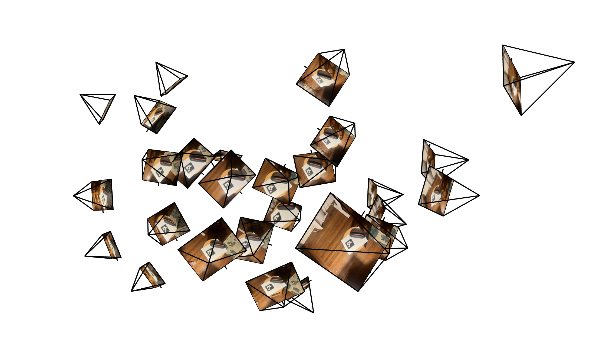
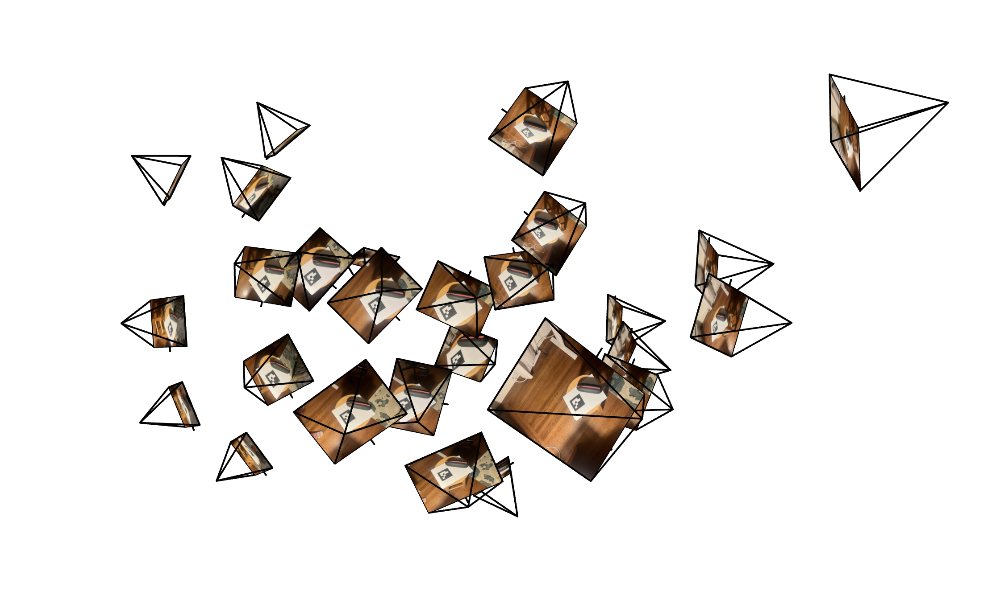
In the above images, we see two visualizations of the same 30+ photos of my favorite pencil holder. We see the camera frustum poses and the resulting images.
Part 1 - Fitting a Neural Field to a 2d Image
Here we construct a Neural Field (F: {u, v} -> {r, g, b}) that can represent a 2d image in the neural network space.
We first build a multilayer perceptron with an input of a 42 dimensional sinusoidal positional encoding of the (x,y) coordinates, 6 hidden layers of 256 neurons each
and each followed by a ReLU activation function, and the sigmoid function mapping predictions to a 3D RGB output. This network was trained using the Adam optimizer,
a learning rate of 1e-3, and 2000 iterations with a batch size of 10k in the training loop. The loss function used was MSE loss.
Below we see two images learned by the network. Each image is reconstructed below after 0, 100, 200, 1000, and 2000 iterations.

 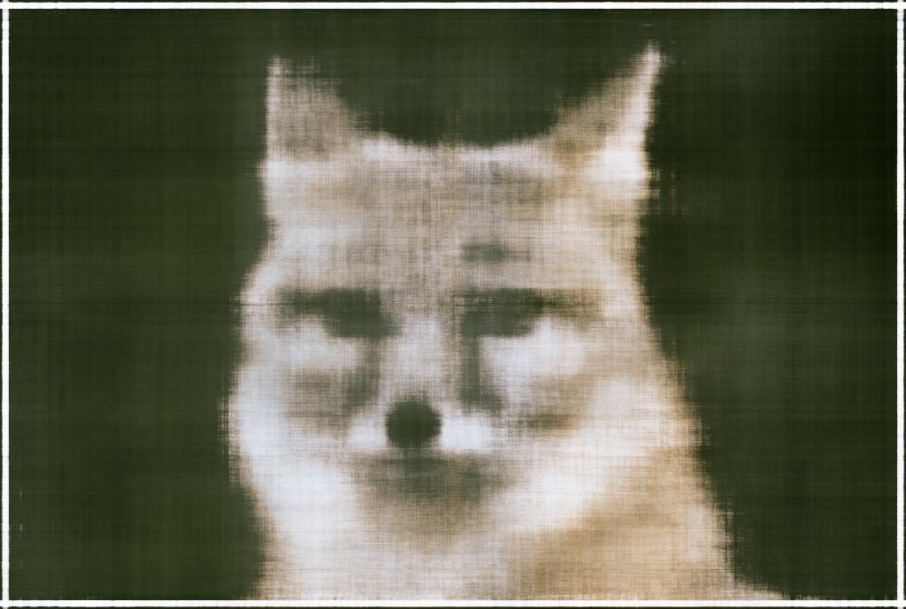
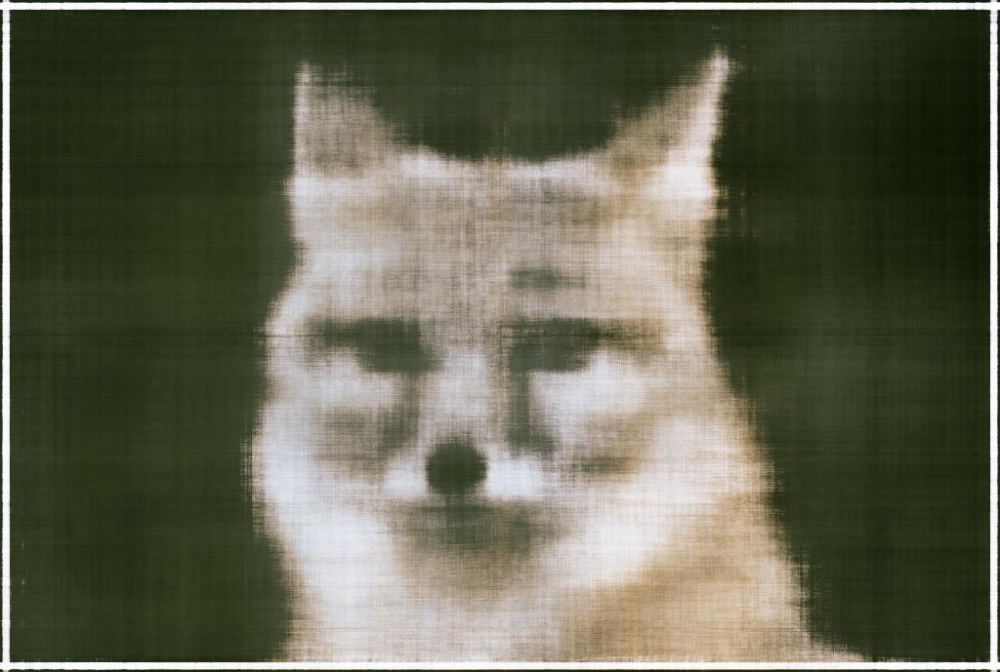


 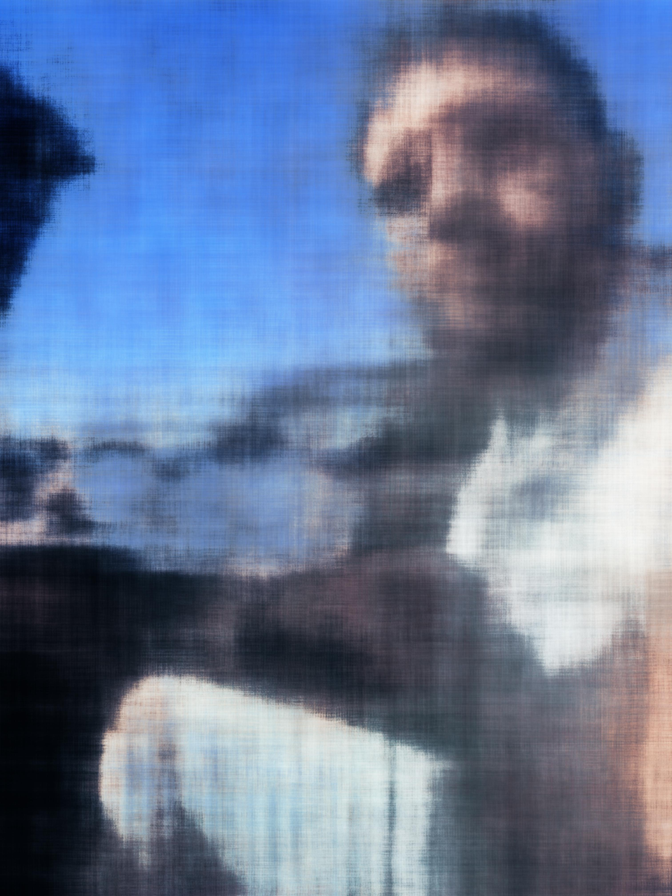
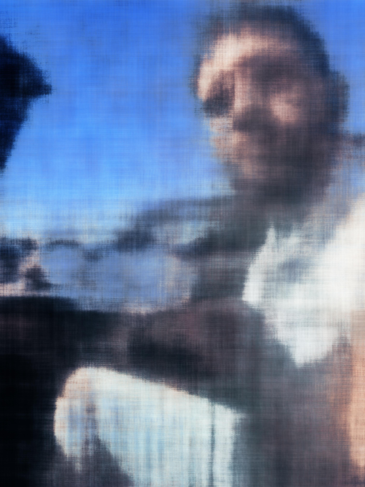


Below Peak Signal-to-Noise Ratio (PSNR) graphed over 2000 training iterations of the second image. It seems to plateau around 1750 iterations
but reaches a reasonable result much sooner, even around 250 iterations.

Below we see the effects of altering the width of the model and the positional encoding frequency. From left to right top to bottom, the four images show
width=20 & L=0, width=20 & L=4, width = 100 & L = 0, width = 100 & L = 4. Each image is shown on the 2000th iteration.
It seems that adding dimensions to the input in the positional encoding produces reasonably clear results before adding width to the model. In both instances
where L=0, we see the blurriest images.


 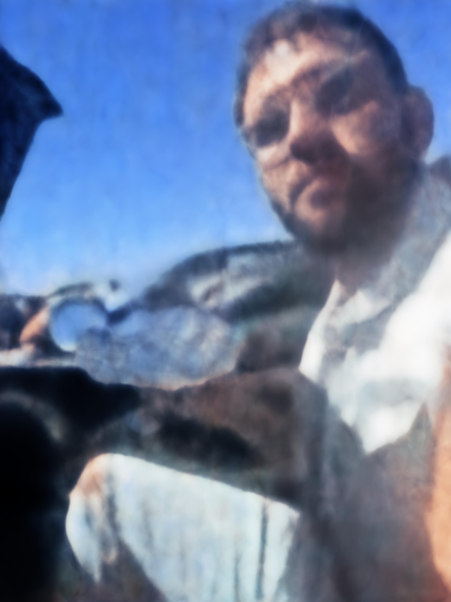
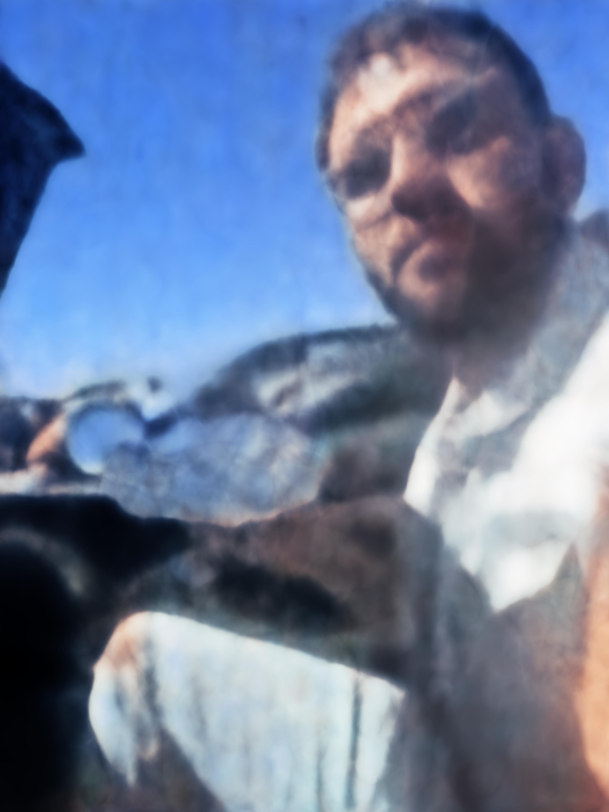
Part 2 - Fitting a Neural Radiance Field from Multi-view Images
In this section I fit a neural radiance field from a predefined lego dataset. To implement this from images taken from a calibrated camera, pixels need to be converted first to camera coordinates, world coordinates, and finally into rays. The pixel to camera conversion takes place by using the inverse of the intrinsics matrix to transform the homogeneous pixel coordinate to 3D space. We then multiply this result by the inverse of the extrinsic matrix to get this coordinate in world coordinates (defined by the Aruco tags in the images I captured). For this same pixel, we can define a ray with the camera center (given as the translation component in the camera-to-world matrix) the pixel in world at a depth of one from the camera center. The MLP is constructed with the architecture below,
Then, to train the neural radiance field, we sample rays across all images and sample points along these rays, randomly dispersed between some distance interval. For the Lego scene, this interval is between 2 and 6 meters. Below is a visualization of this sampling method across many images and from only one camera.
 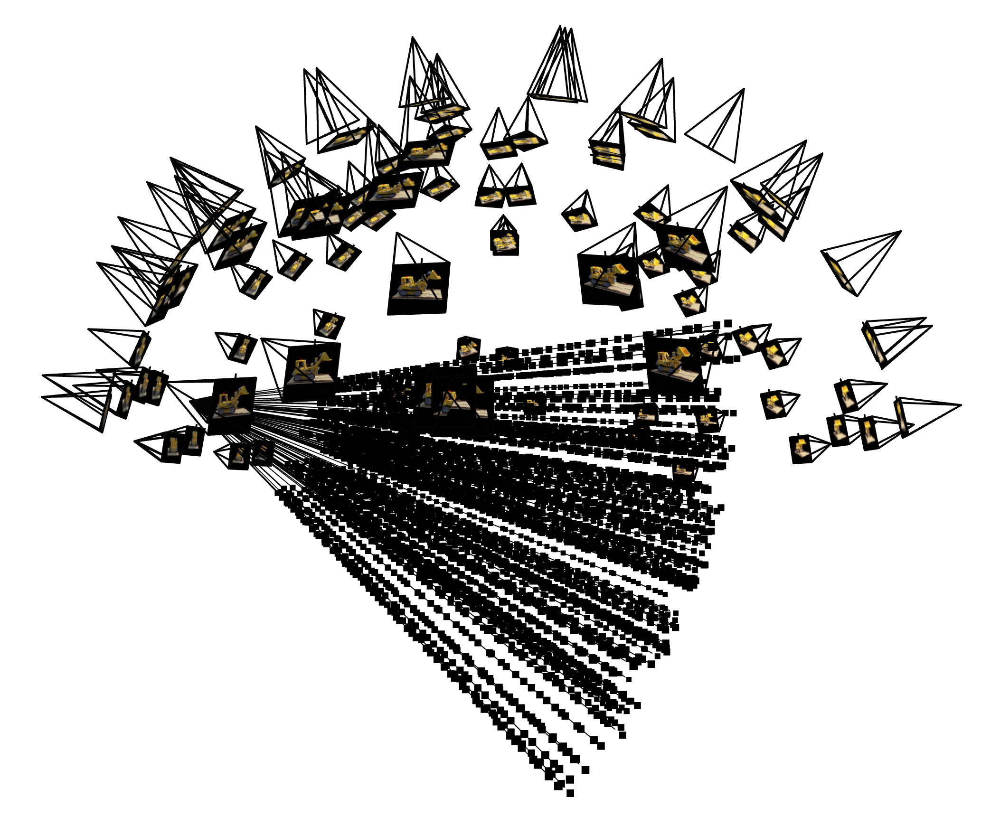
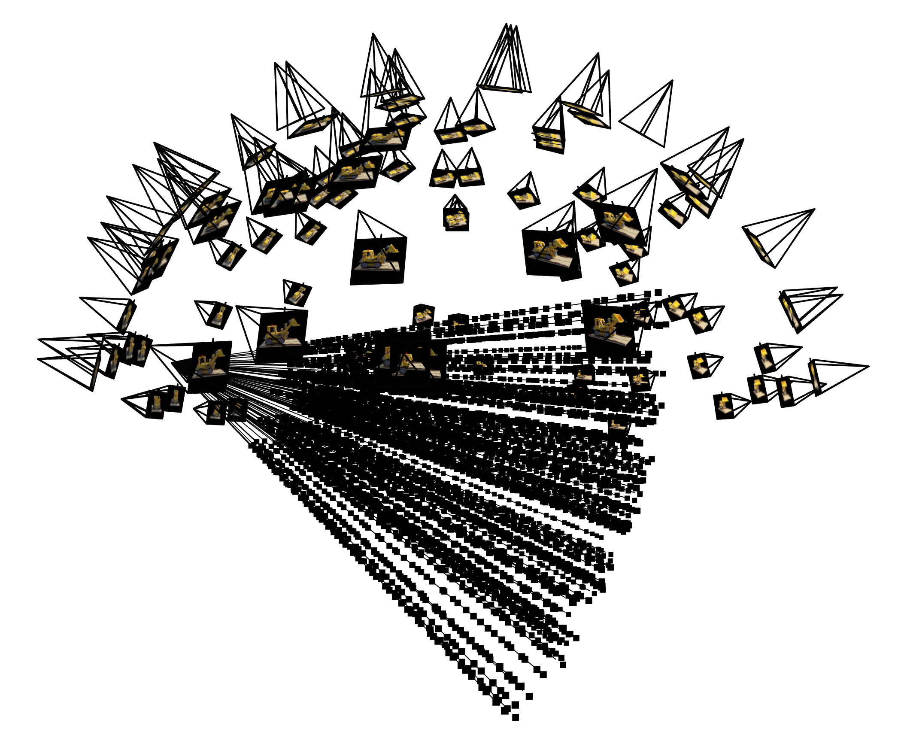


And finally, using the spherical perspectives from the test set, we can generate a 3D view of the lego truck.
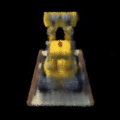
Now, we can repeat the process on data collected from an iPhone camera, using Aruco tags to calibrate the camera. I tried to capture photos within 1 meter of the teapot, so I changed my near/far parameters to be 0.2-1.0. I also sampled 64 points per ray as opposed to 32. Below is a rendered perspective from the validation set at 0 iterations of training, 500 iterations, 4,000 iterations, and 8,000 iterations, along with the MSE and PSNR curves.


And the final rendered 3D gif: